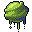

Poison gland¶Ordinary animal part.
{ .sprite }
| Item ID | gland |
| Category | Animal part |
| Rarity | Ordinary |
| Base value | 15 gold |
| Introduced | v0.7.0 or earlier |
How to get it¶
Dropped by¶
| Monster | Chance | Qty | Found in |
|---|---|---|---|
| Venomous swamp creature | 100% | 3-10 | galmore_28 |
| Grasslands snake | 30% | 1 | Loneford, Crossroads Guardhouse, Guynmart Castle |
| Tough grasslands snake | 30% | 1 | Loneford, Crossroads Guardhouse, Guynmart Castle |
| Grasslands lizard | 30% | 1 | Crossroads Guardhouse |
| Black grasslands lizard | 30% | 1 | Crossroads Guardhouse, Flagstone Prison |
| Poisonous river frog | 30% | 1 | Guynmart Castle |
| Sullengard forest snake | 30% | 1 | Sullengard |
| Queen Sullengard forest snake | 30% | 1 | way_to_sullengard_east9 |
| Sullengard red forest snake | 30% | 1 | sullengard_west_ravine, sullengard_woods1, sullengard_woods13 |
| Yellow tooth slitherer | 30% | 1 | Deebo's Orchard |
| King yellow tooth slitherer | 30% | 1 | way_to_sullengard_east1 |
| Breeder of venomscale | 20% | 1-3 | lodar16, lodar19 |
| Venomscale master | 20% | 1-3 | lodar17, lodar19 |
| Plague groundberry | 20% | 1 | sullengard_woods11, sullengard_woods12, sullengard_woods3 |
| ViridToxin dartmaw | 8% | 1 | Flagstone Prison |
| Forest snake | 5% | 1 | Blackwater Mountain, Fallhaven |
| Young cave snake | 5% | 1 | Blackwater Mountain |
| Cave snake | 5% | 1 | Blackwater Mountain |
| Venomous cave snake | 5% | 1 | Brimhaven, Bloskelt + Roskelt, Entry |
| Tough cave snake | 5% | 1 | Brimhaven, Bloskelt + Roskelt, Entry |
| Forest serpent | 5% | 1 | Flagstone Prison, Fallhaven, Crossroads Guardhouse |
| Vicious forest serpent | 5% | 1 | Guynmart Castle, Foaming Flask Tavern, Fallhaven |
| Slithering venomfang | 5% | 1 | Stoutford, Blackwater Mountain, Prim |
| Scaled venomfang | 5% | 1 | Blackwater Mountain |
| Tough venomfang | 5% | 1 | Blackwater Mountain, Flagstone Prison |
| Puny venomscale | 5% | 1 | lodar16, lodar20, lodar21 |
| Young venomscale | 5% | 1 | lodar16, lodar20, lodar21 |
| Gray venomscale | 5% | 1 | lodar16, lodar20, lodar21 |
| Aggressive venomscale | 5% | 1 | lodar16, lodar17, lodar18 |
| Quick venomscale | 5% | 1 | lodar16, lodar17, lodar18 |
| Vicious venomscale | 5% | 1 | lodar18, lodar19, lodar21 |
| Strong venomscale | 5% | 1 | lodar18, lodar19, lodar21 |
| Tough venomscale | 5% | 1 | lodar19 |
| Young cave serpent | 5% | 1 | basiliskcave1_1_1, basiliskcave1_1_2, basiliskcave1_1_3 |
| Cave serpent | 5% | 1 | basiliskcave1_1_1, basiliskcave1_1_2, basiliskcave1_1_3 |
| Venomous cave serpent | 5% | 1 | basiliskcave1_1_3, basiliskcave1_1_4, basiliskcave1_1_5 |
| Tough cave serpent | 5% | 1 | basiliskcave1_1_3, basiliskcave1_1_4, basiliskcave1_1_5 |
| Slippery Venomfang | 5% | 0-2 | Blackwater Mountain |
| Noxious venomfang | 5% | 0-2 | Blackwater Mountain |
| Big cave snake | 5% | 1 | 4 wells, Roundlings |
…and 40 more.
Verified against v0.8.18 item, loot, map and dialogue data.
Uses¶
Where the game checks for this item in dialogue:
| With | Quest | What happens to it | Option |
|---|---|---|---|
| Gruil | Search for Andor | handed over (1×) | “Here, I have a poison gland for you.” |
| Potion merchant (fallhaven_potions) | Taste is everything | handed over (1×) | “I have those ingredients for you.” |
| Potion merchant (fallhaven_potions) | Taste is everything | handed over (1×) | “I have those ingredients for you.” |
| Potion merchant (fallhaven_potions) | Taste is everything | handed over (5×) | “Here, I have enough of those ingredients for five potions.” |
| Potion merchant (fallhaven_potions) | Taste is everything | handed over (10×) | “Here, I have enough of those ingredients for ten potions.” |
Verified against v0.8.18 dialogue data.
Version history¶
| Version | Change |
|---|---|
| v0.7.0 | Present in v0.7.0 (earliest release tracked) |
Verified against v0.8.18 and every earlier release back to v0.7.0 (game data compared release by release).
Community notes¶
Written by players, not generated from game data. Strategy: how and when to use it · Lore: the in-world story · Trivia: real-world facts, references, development history · Theory / speculation: unconfirmed ideas; may just be unfinished content
Strategy¶
Nothing here yet. Know something? Add it.
Lore¶
Nothing here yet. Know something? Add it.
Trivia¶
Nothing here yet. Know something? Add it.
Theory / speculation¶
Nothing here yet. Know something? Add it.
Technical information
| Item ID | gland |
| Category ID | animal |
| Icon | actorconditions_1:60 |
| Defined in | res/raw/itemlist_animal.json |
| Loot tables containing it | snake, snake2, cave_serpent, fieldcritter_2, fieldcritter_3, frog_3, irdegh_spawn, irdegh, irdegh_b, plaguespider, vscale, vscaleb, bwm_venomfang2, forest_snake_dl, yellow_tooth_dl, plague_groundberry_dl, young_virid_toxin_dl, virid_toxin_dl, burrowing_glow_worm_dl, venomous_swamp_creature_dl |
Raw data:
{
"id": "gland",
"iconID": "actorconditions_1:60",
"name": "Poison gland",
"hasManualPrice": 1,
"baseMarketCost": 15,
"category": "animal"
}
Data from v0.8.18